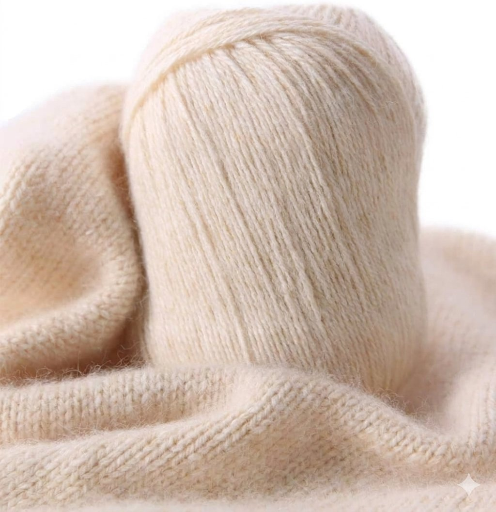

Atelier MAUDÉ — Le savoir-faire
De la fibre
De la fibre
au vêtement.
À Suzhou, chaque manteau MAUDÉ prend forme à travers une succession d'étapes qui transforment la matière en vêtement.
À Suzhou, chaque manteau MAUDÉ prend forme à travers une succession d'étapes qui transforment la matière en vêtement.
Un manteau MAUDÉ n'est pas fabriqué en un geste. Il résulte d'une suite d'étapes — de la fibre au fil, du fil au tissu, du tissu à la construction — que nous suivons du début à la fin. C'est cette attention portée à l'ensemble de la chaîne, et pas seulement à la matière de départ, qui donne au vêtement sa forme définitive.

Avant de devenir tissu, la fibre de cachemire et la laine sélectionnée sont filées. Le filage transforme la matière brute en fil — une étape déjà décrite plus en détail dans Notre Cachemire.
Le fil qui en résulte porte déjà, avant même le tissage, les qualités de la fibre dont il est issu.

Le fil de laine et de cachemire est ensuite tissé pour former le tissu qui deviendra un manteau MAUDÉ.
C'est à ce stade que se décident la densité du tissu et sa tenue — ce qui, plus tard, déterminera la façon dont le vêtement tombe sur le corps.

Le tissu est ensuite coupé et cousu par les artisans des ateliers à Suzhou. Chaque pièce est contrôlée individuellement avant expédition.
La qualité d'une matière ne prend son sens que si le vêtement est construit avec la même exigence.
Un manteau MAUDÉ traverse plus de 40 étapes avant d'être prêt à voyager. Ce chiffre ne désigne pas une performance à afficher : il correspond aux opérations que recouvrent la récolte de la fibre, le filage et le tissage, puis la confection — chacune décomposée en plusieurs gestes contrôlés un à un.
La complexité n'est pas un argument commercial ; c'est une attention portée à l'ensemble du processus.
Suzhou n'est pas un simple lieu de fabrication : c'est là que la matière devient concrètement un manteau MAUDÉ. Nos ateliers partenaires y filent la fibre, la tissent, puis coupent et assemblent chaque pièce.
Nous travaillons avec les mêmes ateliers depuis le début, dans une relation directe plutôt qu'une commande anonyme — un choix de proximité avec les ateliers, pas un argument marketing.
Suzhou et Paris ne se succèdent pas : ils se répondent. Découvrir La Maison →
La façon dont un tissu est coupé et assemblé n'est jamais neutre : elle décide du volume, de la longueur, du tombé, de la façon dont un manteau bouge avec le corps.
Chez Huā Long, ce tombé participe directement à la présence du manteau. Chez Yūn Long, c'est la ceinture qui vient clore chaque pièce et redessiner la silhouette. Chez Yūn Court, la même logique de construction aboutit à une proportion plus courte et plus libre.
Trois silhouettes, une même exigence de construction.
La matière, le tissu, la construction, la proportion, la silhouette finale : rien n'est isolé. Chaque manteau MAUDÉ est le résultat d'une chaîne de décisions prises depuis la fibre jusqu'à la dernière couture.
Voir les manteaux Notre Cachemire